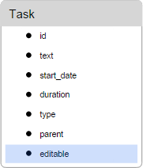
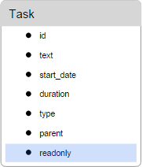

In this part we want to consider read-only mode in the context of 2 situations:
To make the entire Gantt chart read-only, set the readonly option to true.
gantt.config.readonly = true;
gantt.init("gantt_here");
Note, when the entire Gantt chart is non-editable, users can't open the lightbox.
To make specific tasks/links editable in the read-only Gantt chart, add the 'editable' property to their data object and set it to true:

gantt.config.readonly = true;
var task = gantt.getTask(id).editable = true;
By default, the mentioned behavior is binded to the 'editable' property of a task/link. You can change the target property using the editable_property configuration option:
gantt.config.editable_property = "property_name";
To make specific tasks or links read-only, add the 'readonly' property to data objects and set it to true:
gantt.getTask(id).readonly = true;
gantt.getLink(id).readonly = true;

By default, the gantt checks whether a task/link has this property with a no-negative value then makes the task/link read-only. Otherwise - keeps it editable.
When the task/link is read-only, it won't react on clicks, double clicks, isn't draggable or editable in any way.
By default, the read-only behavior is binded to the 'readonly' property of a task/link. But you can change the target property using the readonly_property configuration option:
gantt.config.readonly_property = "property_name";
The 'editable_property' refers to the property of the task data object, not to the lightbox section or the column of the left-hand grid:
{
tasks:[
{id:1, text:"Project #2", start_date:"01-04-2020", duration:18,order:10,
progress:0.4, parent:0, editable:false},
{id:2, text:"Task #1", start_date:"02-04-2020", duration:8, order:10,
progress:0.6, parent:1, editable:true},
{id:3, text:"Task #2", start_date:"11-04-2020", duration:8, order:20,
progress:0.6, parent:1, editable:true}
],
links:[...]
}
If you want to make it settable from the lightbox, you need to set the 'editable_property' to the same property the control is mapped to:
gantt.config.lightbox.sections = [
{
name:"description",
height:38,
map_to:"some_property",
type:"textarea",
focus:true
},
....
]
gantt.config.editable_property = "some_property";
If you want to make events conditionally editable based on a set of properties, you can:
gantt.attachEvent("onTaskLoading", function(task){
task.editable = task.has_owner && task.editable && task.text;
return true;
});